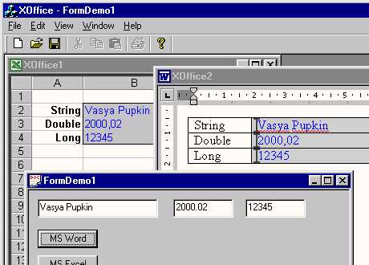

Применение MS Office в MFC MDI приложении
Автор: Igor Tkachev.

Зачем?
Однажды я занимался проектом, главной особенностью которого было наличие
не детского количества типовых форм ввода и вывода.
Что-то типа делопроизводства. Документы должны были заполняться данными
из БД или другими данными, которые может предоставить программа.
При этом было бы крайне желательно, чтобы шаблон документа мог разобратьс
с этими данными самостоятельно.
Оказалось, что всем этим требованиям удовлетворяет MS Office.
В этой статье я попытаюсь это продемонстрировать.
Сразу замечу, что самой большой проблемой была нестабильная работа самого
MS Office в режиме ActiveX Document. Поэтому, вы заметите некоторые явно
не оптимальные решения, но это на первый взгляд. Например, пришлось
отказаться от прямого вызова макросов VBA, т.к. после завершения программы
MS Office оставался в памяти, и снять его можно было только диспетчером
задач, ну и т.п.
Если вам удастся решить эту проблему, прошу поделиться со мной.
Начнем.
1.
Сгенерируйте новое MDI приложение при помощи MFC
AppWizard. Назовите проект XOffice и на третьем шаге обязательно установите
флажки Container и Active document container.
2.
Приложение должно быть сервером автоматизации. Я воспользовался способом,
предложенным Nick Hodapp в примере AutoATL, который можно найти на
www.codeguru.com.
Ознакомьтесь с этим примером и выполните все шаги по преобразованию
программы в сервер автоматизации.
3.
Теперь займемся подключением MS Office.
Включите в проект файл Office.h следующего содержания:
// Office.h
#define Uses_MSO2000
#ifdef Uses_MSO2000
// for MS Office 2000
#import "C:\Program Files\Microsoft Office\Office\MSO9.DLL"
#import "C:\Program Files\Common Files\Microsoft Shared\VBA\VBA6\VBE6EXT.OLB"
#import "C:\Program Files\Microsoft Office\Office\MSWORD9.OLB" \
rename("ExitWindows","_ExitWindows")
#import "C:\Program Files\Microsoft Office\Office\EXCEL9.OLB" \
rename("DialogBox","_DialogBox") \
rename("RGB","_RGB") \
exclude("IFont","IPicture")
#import "C:\Program Files\Common Files\Microsoft Shared\DAO\DAO360.DLL" \
rename("EOF","EndOfFile") rename("BOF","BegOfFile")
#import "C:\Program Files\Microsoft Office\Office\MSACC9.OLB"
#else
// for MS Office 97
#import "C:\Program Files\Microsoft Office\Office\MSO97.DLL"
#import "C:\Program Files\Common Files\Microsoft Shared\VBA\VBEEXT1.OLB"
#import "C:\Program Files\Microsoft Office\Office\MSWORD8.OLB" \
rename("ExitWindows","_ExitWindows")
#import "C:\Program Files\Microsoft Office\Office\EXCEL8.OLB" \
rename("DialogBox","_DialogBox") \
rename("RGB","_RGB") \
exclude("IFont","IPicture")
#import "C:\Program Files\Common Files\Microsoft Shared\DAO\DAO350.DLL" \
rename("EOF","EndOfFile")
rename("BOF","BegOfFile")
#import "C:\Program Files\Microsoft Office\Office\MSACC8.OLB"
#endif
4.
Создадим новую форму, которая нам понадобится в дальнейшем.
Menu – Insert – New Form…
В поле Name введите CFormDemo.
Нажмите кнопку New возле поля Document
и в появившейся форме OK. И еще раз OK.
На новой форме разместим три Edit Box'а и два Button'а.
В ClassWizard'е привяжем Edit Box'ы к переменным (соответственно
CString m_str, double m_double, long m_long).
5.
Для Button'ов создадим обработчики следующего вида:
// FormDemo.cpp
void NewXOfficeDoc(LPCTSTR,LPCTSTR,double,long);
void CFormDemo::OnButton1()
{
UpdateData();
NewXOfficeDoc("XOffice.doc",m_str,m_double,m_long);
}
void CFormDemo::OnButton2()
{
UpdateData();
NewXOfficeDoc("XOffice.xls",m_str,m_double,m_long);
}
В начало файла XOfficeDoc.cpp добавим следующий код:
// XOfficeDoc.cpp
static CString g_template;
static CString g_str;
static double g_double;
static long g_long;
void NewXOfficeDoc(LPCTSTR aTemplate,LPCTSTR aStr,
double aDouble,long aLong)
{
CString str;
POSITION pos = AfxGetApp()->GetFirstDocTemplatePosition();
while (pos != NULL) {
CDocTemplate *temp = AfxGetApp()->GetNextDocTemplate(pos);
if (temp->GetDocString(str,CDocTemplate::docName) {
str == _T("XOffice")) {
g_template = aTemplate;
g_str = aStr;
g_double = aDouble;
g_long = aLong;
temp->OpenDocumentFile(NULL);
return;
}
}
}
Теперь мы умеет создавать MDI документы по нажатию кнопок на форме.
6.
За поддержку включения ActiveX документов в MFC отвечает класс
COleDocObjectItem. Он уже многое умеет, но нам нужно ещё научить
его загружать документы, задаваемые нами.
Внесите следующие изменения в класс CXOfficeCntrItem:
// CntrItem.h
class CXOfficeCntrItem : public ColeDocObjectItem
{
...
public:
CXOfficeCntrItem(CXOfficeDoc* pContainer,LPCTSTR);
bool m_isCreate;
bool CreateItem(LPCTSTR);
...
};
// CntrItem.cpp
CXOfficeCntrItem::CXOfficeCntrItem(CXOfficeDoc* pContainer,LPCTSTR templ)
: COleDocObjectItem(pContainer), m_isCreate(false)
{
CreateItem(templ);
}
bool CXOfficeCntrItem::CreateItem(LPCTSTR templ)
{
USES_CONVERSION;
// get storage for the object via virtual function call
m_dwItemNumber = GetNewItemNumber();
GetItemStorage();
// add AfxOleInit(); in CXOfficeApp::InitInstance
AfxOleGetMessageFilter()->EnableNotRespondingDialog(FALSE);
// attempt to create the object
LPOLECLIENTSITE lpClientSite = GetClientSite();
SCODE sc = ::OleCreateFromFile(CLSID_NULL,
T2COLE(templ),
IID_IUnknown,
OLERENDER_DRAW,
NULL,
lpClientSite,
m_lpStorage,
(LPVOID*)&m_lpObject);
return m_isCreate = FinishCreate(sc) == TRUE;
}
7.
И последнее, что нужно сделать – это внести изменения в классы
CXOfficeDoc и CXOfficeView для отображения ActiveX документа
// CntrItem.h
class CXOfficeCntrItem : public ColeDocObjectItem
{
...
public:
CXOfficeCntrItem(CXOfficeDoc* pContainer,LPCTSTR);
bool m_isCreate;
bool CreateItem(LPCTSTR);
...
};
// CntrItem.cpp
CXOfficeCntrItem::CXOfficeCntrItem(CXOfficeDoc* pContainer,LPCTSTR templ)
: COleDocObjectItem(pContainer), m_isCreate(false)
{
CreateItem(templ);
}
bool CXOfficeCntrItem::CreateItem(LPCTSTR templ)
{
USES_CONVERSION;
// get storage for the object via virtual function call
m_dwItemNumber = GetNewItemNumber();
GetItemStorage();
// add AfxOleInit(); in CXOfficeApp::InitInstance
AfxOleGetMessageFilter()->EnableNotRespondingDialog(FALSE);
// attempt to create the object
LPOLECLIENTSITE lpClientSite = GetClientSite();
SCODE sc = ::OleCreateFromFile(CLSID_NULL,
T2COLE(templ),
IID_IUnknown,
OLERENDER_DRAW,
NULL,
lpClientSite,
m_lpStorage,
(LPVOID*)&m_lpObject);
return m_isCreate = FinishCreate(sc) == TRUE;
}
Итак, теперь мы умеем программно загружать ActiveX
документы. Это уже не плохо само по себе. J
Обратите внимание, что процедуры сохранения и загрузки наших
документов тоже нормально работают, сохраняя при этом содержимое исходного
документа шаблона, правда это совсем не входит в наши планы. Единственное,
что не работает – это Print Preview. Я так и не смог с этим разобраться,
посему, если у кого-то это получится, буду рад узнать об этом первым.
8.
Теперь научим класс CXOfficeDoc сохранять и загружать только
наши данные и не задавать вопросы при изменении данных самого ActiveX
документа. Для этого с помощью ClassWizard'а добавьте методы
OnOpenDocument и SaveModified и внесите следующие изменения:
// XOfficeDoc.cpp
void CXOfficeDoc::Serialize(CArchive& ar)
{
if (ar.IsStoring()) {
ar << m_template << m_str << m_double << m_long;
} else {
ar >> m_template >> m_str >> m_double >> m_long;
}
// COleDocument::Serialize(ar);
}
BOOL CXOfficeDoc::OnOpenDocument(LPCTSTR lpszPathName)
{
if (!COleDocument::OnOpenDocument(lpszPathName))
return FALSE;
return LoadTemplate();
}
BOOL CXOfficeDoc::SaveModified()
{
return CDocument::SaveModified();
}
// CntrItem.cpp
void CXOfficeCntrItem::OnChange(OLE_NOTIFICATION nCode, DWORD dwParam)
{
BOOL modified = m_pDocument->IsModified();
COleDocObjectItem::OnChange(nCode, dwParam);
m_pDocument->SetModifiedFlag(modified);
GetDocument()->UpdateAllViews(NULL);
}
9.
Следующим шагом будет получение интерфейса IDispatch ActiveX документа.
Внесем следующие изменени в класс CXOfficeCntrItem:
// CntrItem.h
...
#include <comdef.h>
...
class CXOfficeCntrItem : public COleDocObjectItem
{
public:
...
int m_who; // 0 - ?, 1 - Word, 2 - Excel
IDispatchPtr m_disp;
LPDISPATCH GetIDispatch();
void AttachDisp ();
void ActivateDisp();
void CloseDisp ();
...
};
Я не стал приводить текст соответствующих методов, так как это заняло бы
слишком много места. Их можно посмотреть в исходных текстах программы.
Необходимо будет также внести соответствующие изменения в классы
CXOfficeDoc и CXOfficeView.
// CXOfficeView.cpp
void CXOfficeView::OnInitialUpdate()
{
...
m_pSelection = GetDocument()->m_ctrl;
m_pSelection->AttachDisp();
//Active documents should always be activated
...
m_pSelection->ActivateDisp();
}
// CXOfficeDoc.cpp
void CXOfficeDoc::OnCloseDocument()
{
if (m_ctrl)
m_ctrl->CloseDisp();
COleDocument::OnCloseDocument();
}
10.
Теперь пришло время наделить разумом наш сервер автоматизации.
Для этого определим свойства ActiveDocument и IsActiveDocument
для интерфейса IApplication, а также свойства PStr,
PDouble и PLong для интерфейса IDocument.
Это просто сделать с помощью ATL Wizard'а.
Workspace – Class View – IApplication – Правый мышь – Add Property
Workspace – Class View – IDocument – Правый мышь – Add Property
Реализацию методов можно посмотреть в исходных текстах.
11.
Файлы XOffice.doc и XOffice.xls являются примеры документов Word и Excel.
В Word документе инициализация полей происходит в событии Document_New,
которое явно вызывается из программы. Значение полей
присваивается именованным закладкам. В Excel документе инициализаци ячеек
производится в событии Workbook_Activate. Это не совсем удобно,
но я перепробовал множество вариантов и остановился на этом, как на наиболее
устойчиво работающем. Как я уже говорил, непосредственный вызов макроса из
VBA оставляет Excel в памяти после завершения работы программы.
Игорь Л. Ткачёв
it@hotmail.ru
Downloads
Скачать demo project - 36 Kb
Скачать исходник - 71 Kb
|